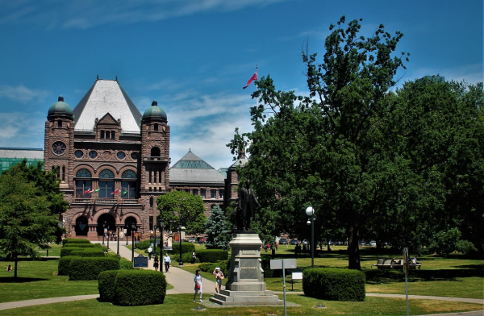
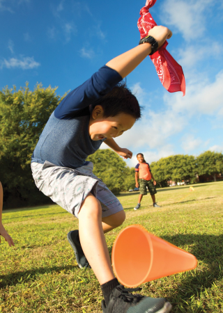
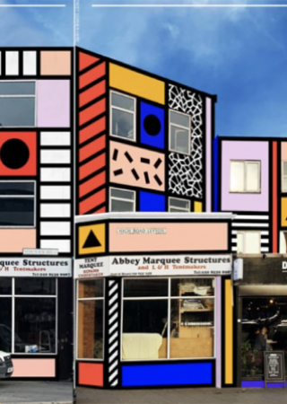

發現世界
Discover the world
英國愛丁堡國際藝術節
Edinburgh International Festiva
愛丁堡國際藝術節於每年八月在蘇格蘭首府愛丁堡舉辦， 創辦於1947年，和愛丁堡國際藝穗節在同一時期舉辦， 為世界歷史最悠久、規模最大的國際藝術節之一。加拿大魁北克冬季嘉年華
Quebec Winter Carnival
魁北克冬季嘉年華在每年一月最後一星期的週五揭開序幕， 活動持續三週，到二月中落幕。冬季嘉年華的活動十分豐富， 攀登冰山、冰雕、遊行、獨木舟橫越聖羅倫斯河、音樂會、 化裝舞會等等，讓冬季熱鬧到最高點。日本大阪天神祭
てんじんまつり
日本三大節慶活動之一，是世界上最大規模的水上慶典， 神轎、小船、煙火交織而成的夢幻天神祭已有1千多年歷史， 祭奉日本的學問與學習之神菅原道。啟發之旅：探索孩子的未來發展潛能
探索在地大學城
每年暑期(六月下旬至八月底)享受美國頂尖私立國高中、 大學名校為全球各地學生開設的專業學分課程、暑期課程或語言課程， 提前進入美國一流名校體驗大學生活，感受海外留學生活，提升學生的綜合素質背景， 為將來的留學生活做好充分的準備！

親子遊學夏令營
親子遊學，讓家長和孩子在暑假期間可以完美結合學習與家庭假期。 孩子參加夏令營的時候，家長將參加成人英語課程，學校會提供完整的英語課程、 各式的體育活動、藝術課程及其他多樣的文化課後活動。探索未來職涯與興趣
提供五種選修課程：醫學、商業財務、工程、媒體與溝通、電腦科學， 課程分為理論、實作、參訪三部分，並以小組合作完成專案報告。 鼓勵學生透過認識新朋友、課後社交活動，降低學生對於新環境的焦慮，在團體活動中得到自我肯定、 建立使用英語溝通和學習專業科目的自信心、加強交際能力。最新消息
2021.12.01
NEWS
LAX 的全球入境登記中心今天重新開放，自 2022 年 1 月 15 日起， 年滿 18 歲的國際學生只有在完整接種了認可的疫苗後才能入境。2021.11.30

NEWS
2022冬令營即日起開放報名，享早鳥報名優惠，興趣還不明確的孩子，透過各式活動培養興趣，探索未來 豐富課程與有趣多樣的課後活動，加速與深化學習成效。2021.11.25
NEWS
加拿大要求所有航空旅客全面接種疫苗，國際學生必須在進入加拿大前至少 14 天接受加拿大政府接受的全系列疫苗或混合疫苗。2021.11.03
